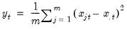
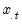

@rvarp By-Row Statistics Row population (non d.f. corrected) variances. Pearson product moment population variances for each row of the group, with d.f. correction. Syntax: @rvars(x) x: group Return: series For each observation corresponding to a row in the group of series, compute the population variance,  where  is the mean of the values for the observation. Examples show @rvarp(g returns a linked series of population variances in the rows of group g. Cross-references See also @rvar and @rvars.


 corresponding to a row in the group of
corresponding to a row in the group of  series, compute the population variance,
series, compute the population variance, values
values  for the observation.
for the observation.